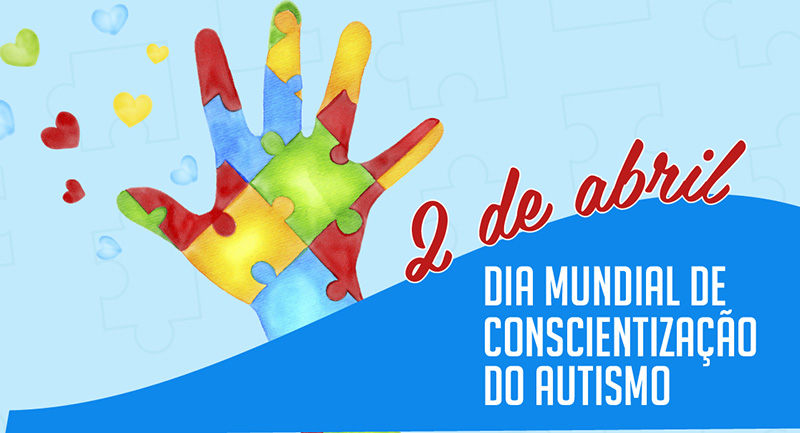

Dia da conscientização do Autismo
2 de abril
Dicas de como se tratar autistas

Eduque-se sobre o autismo: Procure aprender sobre o autismo e suas características. Isso ajudará você a entender melhor como interagir com a pessoa autista.
Comunique-se claramente: Use linguagem simples e direta ao se comunicar com a pessoa autista. Evite metáforas ou expressões ambíguas.
Respeite as preferências sensoriais: Muitas pessoas autistas têm sensibilidades sensoriais diferentes. Observe e respeite suas preferências em relação a luz, som, texturas e cheiros.
Mantenha uma rotina consistente: A previsibilidade é importante para muitas pessoas autistas. Tente manter uma rotina consistente sempre que possível e avise sobre quaisquer mudanças com antecedência.
Seja paciente e dê tempo: Pode levar mais tempo para uma pessoa autista processar informações ou responder a estímulos. Seja paciente e dê-lhes o tempo necessário para se expressar ou entender o que está acontecendo ao seu redor.
Evite sobrecarga sensorial: Ambientes barulhentos, lotados ou muito estimulantes podem ser avassaladores para pessoas autistas. Procure criar ambientes calmos e tranquilos quando possível.
Incentive a comunicação não verbal: Nem todas as pessoas autistas se comunicam verbalmente. Esteja aberto para outras formas de comunicação, como gestos, desenhos ou dispositivos de comunicação alternativa.
Respeite suas necessidades de espaço pessoal: Algumas pessoas autistas podem ter uma preferência por espaço pessoal maior do que outras. Respeite suas necessidades e evite invadir seu espaço sem permissão.
Ofereça apoio social: Encoraje a participação em atividades sociais que sejam confortáveis para a pessoa autista. Seja um apoio positivo e esteja disponível para ajudar quando necessário.
Celebre suas realizações: Reconheça e celebre as conquistas da pessoa autista, por menores que sejam. Isso pode ajudar a construir confiança e autoestima.
voltar